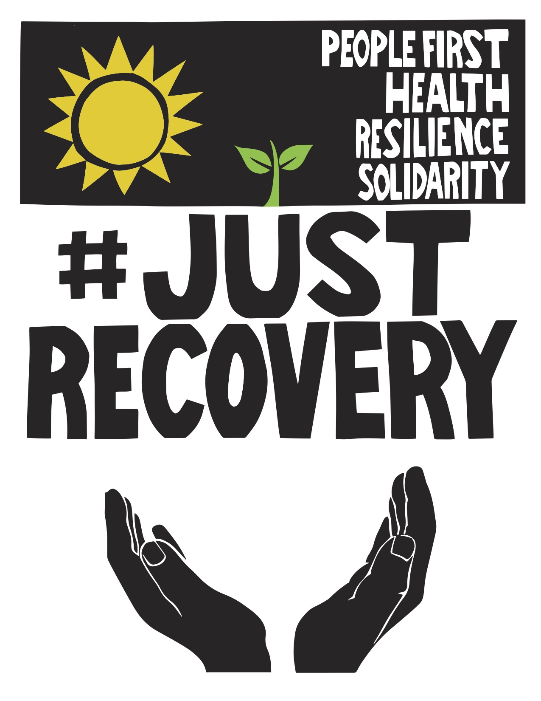
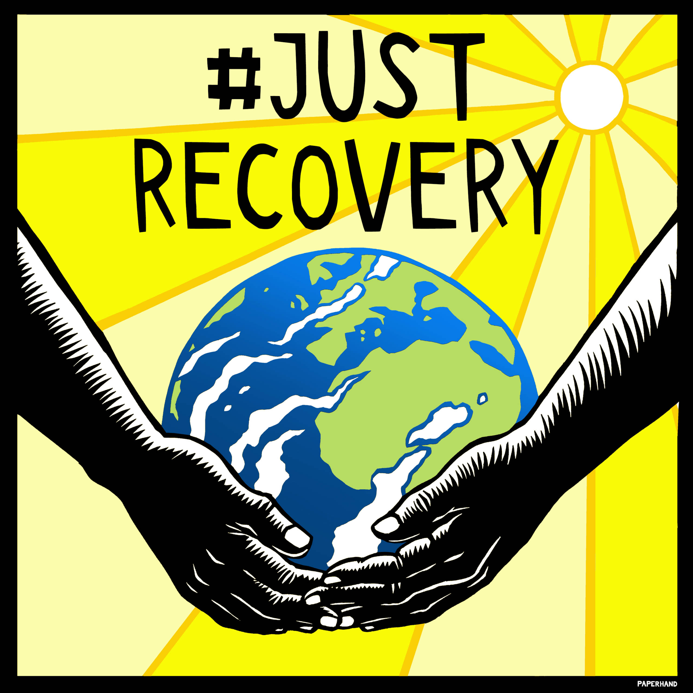
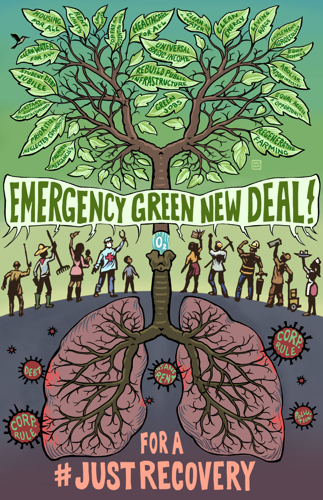

Art Kit:
Support a Just Recovery
About This Art Kit
This art kit was developed during the global COVID-19 pandemic. Hundreds of organizations are calling for a united global response that ensures a just recovery and transition to a better future for those most in need in the wake of this crisis. We know that the choices we make today will shape our society, economy, and climate for decades to come.
Art is a key way we can build connections, engage people, tell our story, and demand change. We believe that even if many of us cannot leave our homes, we can still create powerful art together.
With this toolkit you can:
-
Download and share art >>
- Find guides on creating your own art >>
- Find resources on holding virtual art builds >>
-
Submit your own art >>
It will be updated in the coming weeks and months, so come back and check out additional how-to’s, images and ideas.
Just Recovery Signs
Here are some special art pieces that have been created for this moment. You can:
- Use these designs as graphics for online event posters.
- Download them to make your own signs (details below)
- Trace or project the designs for big banners or flags to hang from your house
- Use them to screen print flags, signs, or patches
These designs are available in a variety of languages.
Sprout & Sun
Created by David Solnit
Support a Just Recovery
The global response to COVID-19 could ensure a just recovery for everyone in the wake of this crisis. Here are 5 guiding principles we can all get behind:
- Put people's health first, no exceptions.
- Provide economic relief directly to the people.
- Help our workers and communities, not corporate executives.
- Create resilience for future crises.
- Build solidarity and community across borders – do not empower authoritarians.
Earth & Hands
Created by Jan Berger of Paperhand Puppet Intervention
About the Artist
Paperhand Puppet Intervention is a puppet theater company based out of Saxapahaw, NC. They use puppetry, performance and creativity to undermine and eradicate greed, hate and fear and promote justice, equality and peace. They are currently involved in the fight against a new fracked gas pipeline planned to be built along the Haw River. paperhand.org
Tips for Making Art with These Signs
Here are tips on how you can use these designs to copy and make signs or posters to hang in your home, window, public spaces.
- DOWNLOAD: Find the the image/s you want to use. Here are the links to a Dropbox file of the designs shown above.
- PRINT: You can print from a USB flash drive, your email, or your computer. If this will be the final size of your signs, it’s more durable if you can get card or a heavy paper.
- TRACE: For some of us who don’t have access to a printer, it may work to trace onto paper from your computer screen. Tape the paper and trace one part at a time if paper is bigger than screen. It may help to trace with a pencil and then go over with marker, pen or paint.
- ENLARGE One way to make a larger sign is to enlarge the design onto two sideways A3 sheets (11×17 inches, 30×42 cms), cut out and paste together on a rigid backing, and create one bigger sign (or do it in 4 sections and make it even bigger). You could also use a projector if you have access to one.
- MOUNT: You can mount images on cut-to-size posterboard/ cardboard/ thin plywood using spray adhesive, rubber cement, a quality glue stick, or 1 inch masking tape around the edges.
- HAND COLOR — HAVE AN ART PARTY: The black and white designs are great to print out and color by hand — a perfect activity for your family or for an online art party.
Make a Just Recovery Mask
The Just Recovery mask is a symbol of our collective principles and demands. You can show your support on Facebook by adding a Just Recovery mask to your profile picture. Or you can make a real life mask. Check out some tips here.

More Art
Many artists have felt compelled to create art that showcases the urgency for solidarity, community, and action.
Here is some more art that you can download and share.
- A great place to start are these care packages from Just Seeds: 1 , 2 , 3
- There is also an incredible Art Kit for the #PeopleNotPolluters movement. Check it out here.
Artist's Statement
"Today there are only tears. The trees cry when they feel the fire, the cats cry when they feel the bullets, the flowers cry when they do not see the sun, the people cry when they see that everything is ending, when they see that their wealth is sick. Tears accumulate in ponds, clouds and then it falls. Perhaps the fire begins to slow down, the forest turns green again and the tigers will find their home. All this pain we have caused and the mother who tenderly welcomes us, now exhausts her light, her life drains in black rivers, in gray clouds and cemeteries full of the beings that she created. She remembers her strong voice, thunder in the sky and the wind scatters the fire, her fire erodes and purifies, destroys and shelters, she wants our attention and no one listens to her: she takes a deep breath and takes a moment, hopes that we learn the lesson, hopes that we return to where we did not need so much, where the cry was compost, where the oxen and trees struggled just to grow. She made us remember that everything that walks on her is life and deserves respect."Created by Mona Caron
About the Artist
Mona Caron is a San Francisco-based artist, using muralism, illustration and photography in both her art and artivism. Locally known for her trans-temporal murals of neighborhood history leading to collectively visioned radical transformations into positive futures, and known internationally for her botanical mural series titled ”Weeds”, a metaphor about resilience and resistance, Mona also creates art for street actions and graphics in accompaniment of social and environmental justice movements. Her art has been used in climate justice movements, water rights, and labor rights groups with organizations including 350.org, the Coalition of Immokalee Workers, Zero-waste Detroit, US Social forum, La Coordinadora por el Agua y la Vida and Fundación Abril of Cochabamba Bolivia, Land is Life and Acción Ecologica (Ecuador), as well as bicycle for transportation advocacy groups worldwide. https://monacaron.com
Virtual Art Build
Here’s one way we can make art together, stay safe at home, and show solidarity.